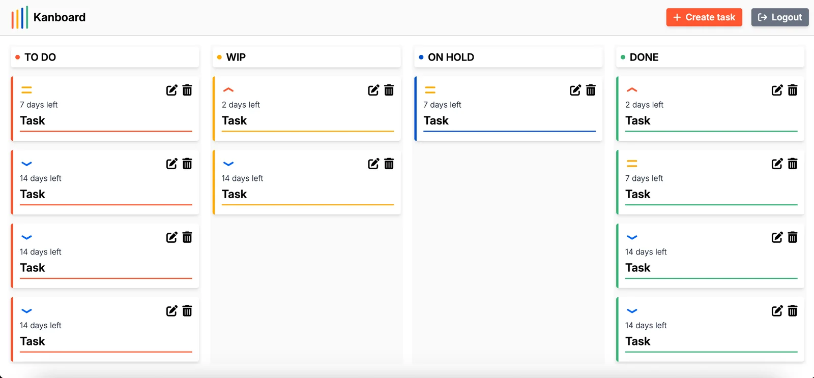

Drag & drop between columns
Move tasks across To do → WIP → On hold → Done with SortableJS. Each drop sends a CSRF-protected request and the new status is saved in PostgreSQL.
Kanboard is the task board I built for my own day-to-day work, using Python, Django, PostgreSQL and Tailwind CSS. Drag tasks across four workflow columns, set priorities that drive real deadlines, and manage everything from a slide-in side panel.

Try it here
A lightweight replica of the board that runs entirely in your browser, so you can get a feel for the workflow while the real server wakes up. Nothing here is saved.
waiting for a move…
Features
I use Kanboard to organise my own tasks, so every feature exists because I needed it.
Move tasks across To do → WIP → On hold → Done with SortableJS. Each drop sends a CSRF-protected request and the new status is saved in PostgreSQL.
Create, edit and delete tasks from a slide-in side panel. Title, details, priority and status are all editable, and deletions ask for confirmation first.
Each priority sets a time limit from the moment the task is created. Cards count down the days and turn red once a task is overdue.
Each column is ordered with a database-level CASE annotation, so high-priority work is always at the top.
Django authentication protects every view, and every query is scoped to the logged-in user, so one user can never see or change another user's tasks.
Built with Tailwind CSS v4: four columns side by side on desktop, stacked on mobile, where status changes happen from the edit panel.
Screenshots
Taken from the production deployment. Click any image to enlarge it.
Under the hood
Server-rendered Django with a small amount of vanilla JavaScript, deployed on managed cloud services.
DATABASE_URL, with secrets loaded from environment variables.
class Task(models.Model):
title = models.CharField(max_length=200)
detail = models.TextField(max_length=600, blank=True)
priority = models.CharField(choices=PRIORITY_CHOICES)
status = models.CharField(choices=STATUS_CHOICES)
user = models.ForeignKey(User, on_delete=models.CASCADE)
creation_date = models.DateField(auto_now_add=True)
def get_days_left(self):
max_days = {'low': 14, 'medium': 7, 'high': 2}[self.priority]
days_passed = (date.today() - self.creation_date).days
return max_days - days_passed # < 0 → shown as "Expired"new Sortable(column, {
group: 'kanban-columns',
animation: 150,
onEnd(evt) {
const taskId = evt.item.dataset.taskId;
const newStatus = evt.to.id.replace('-column', '');
fetch(`/modify_status/${taskId}/${newStatus}/`, {
method: 'POST',
headers: { 'X-CSRFToken': csrfToken },
}).then(res => res.ok && location.reload());
}
});Run it yourself
You need Python 3, Node.js (for the Tailwind CLI) and a PostgreSQL database, either local or a free Neon instance.
.env file with SECRET_KEY, DATABASE_URL and DEBUG=True.createsuperuser.npm run dev to start Django and the Tailwind watcher together.git clone https://github.com/lautaroreche/Kanboard-Web-Page.git
cd Kanboard-Web-Page
python -m venv venv
source venv/bin/activate
pip install -r requirements.txt
npm install
python manage.py migrate
python manage.py createsuperuser
npm run dev # Django + Tailwind watcher